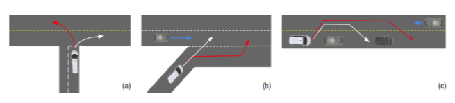

目次
nuPlan: A closed-loop ML-based planning benchmark for autonomous vehicles
Holger Caesar、Juraj Kabzan、Kok Seang Tan、Whye Kit Fong、Eric Wolff、Alex Lang、Luke Fletcher、Oscar Beijbom、Sammy Omari
Motional
arXiv:2106.11810v4 [cs.CV]、2022年2月4日
翻訳について：原文 PDF は
20_nuPlan_2106.11810.pdf（全 5 ページ）。本文、図の説明、図中ラベル、表、脚注、付録を訳出し、論文タイトルと参考文献は原文のまま掲載。図は原図を掲載し、英語ラベルの日本語訳を併記した。数式・数値・引用番号・コードの識別子は原文を維持。原文の記述に関する補足は「訳注」と明示し、本文と区別している。
要旨
本研究では、自動運転のための世界初のクローズドループ型 ML ベース計画ベンチマークを提案する。ML ベースのモーションプランナーに関する研究は増えつつあるが、確立されたデータセットと評価指標がないことがこの分野の進展を制限してきた。自動運転車の動き予測に関する既存のベンチマークは、長期的な計画ではなく短期的な動き予測に焦点を当ててきた。そのため先行研究では、L2 ベースの指標を用いたオープンループ評価が用いられてきたが、これは長期的な計画を公正に評価するには適していない。我々のベンチマークは、大規模な運転データセット、軽量なクローズドループシミュレータ、そしてモーションプランニングに特化した評価指標を導入することで、これらの制限を克服する。交通パターンが大きく異なる米国とアジアの 4 都市（Boston、Pittsburgh、Las Vegas、Singapore）で収集した、1500h の人間による運転データからなる高品質なデータセットを提供する。さらに、反応型エージェントを備えたクローズドループシミュレーションのフレームワークを提供し、汎用的な計画指標とシナリオ固有の計画指標の両方からなる大規模な指標群を提供する予定である。データセットは NeurIPS 2021 で公開し、2022 年初頭からベンチマークチャレンジを開催する計画である。
1 はじめに
大規模な人手ラベル付きデータセットと深層畳み込みニューラルネットワークの組み合わせにより、ここ数年で自動運転車（AV）の認識性能は目覚ましく向上した［9, 4］。これに対し、AV の計画に関する既存の手法は依然として主に入念に設計されたエキスパートシステムに基づいており、新しい地域に適応させるには多大なエンジニアリング作業を要し、学習データを増やしても性能がスケールしない。我々は、適切なデータと評価指標を提供することで ML ベースの計画が可能になり、完全な「Software 2.0」スタックへの道が開かれると考えている。
既存の実世界ベンチマークは、計画ではなく、予測とも呼ばれる短期的な動き予測（motion forecasting）に焦点を当てている［6, 4, 11, 8］。このことは、高レベルの目標が存在しないこと、評価指標の選び方、そしてオープンループ評価であることに表れている。予測は他のエージェントの挙動に焦点を当てるのに対し、計画は自車（エゴ車両）の挙動に関わるものである。

図1：既存のベンチマークの限界を強調するため、さまざまな運転シナリオを示す。自車の観測された走行経路を白で、仮想的なプランナーの経路を赤で示す。(a) 目標が存在しないため、交差点で曖昧さが生じる。(b) 変位ベースの指標は、運転のマルチモーダルな性質を考慮しない。(c) オープンループ評価は、エージェント間の相互作用を考慮しない。
予測は一般にマルチモーダルであり、各エージェントについて最も可能性の高い \(N\) 本の軌跡を予測する。これに対し、計画は一般に（コンティンジェンシープランニングを除いて）ユニモーダルであり、1 本の軌跡を予測する。例として、図1a では、交差点で左折することも右折することも同程度にあり得る選択肢である。予測データセットには、エージェントの高レベルの目標を示す基準となるナビゲーション経路が存在しない。図1b では、すぐに合流する選択肢と後で合流する選択肢はどちらも同等に妥当であるが、一般に用いられる L2 距離ベースの指標（minADE、minFDE、ミス率）は、データ中で観測されなかった方の選択肢にペナルティを与えてしまう。直観的に言えば、マルチモーダルなシナリオにおいて、予測軌跡と観測軌跡の距離は適切な指標ではない。図1c では、追い越しを続けるか車線に戻るかの判断は、すべてのエージェント車両の後続の行動に基づいて行われるべきであるが、これはオープンループ評価では不可能である。クローズドループ評価がないと系統的なドリフトが生じ、短い時間範囲（3〜8s）を超えた評価が困難になる。
そこで我々は、これらの欠点に対処する計画ベンチマークを提供する。主な貢献は以下のとおりである。
- 4 都市から得られた高品質な自動ラベル付きトラックを含む、自動運転向けとして現存する最大の公開実世界データセット。
- 交通規則違反、人間の運転との類似度、車両ダイナミクス、目標達成に関する計画指標、およびシナリオベースの計画指標。
- クローズドループのプランナー評価プロトコルを備えた、実世界データに対する初の公開ベンチマーク。
| データセット | データ量 | 都市数 | センサデータ | 種別 | 評価 |
|---|---|---|---|---|---|
| Argoverse | 320h | 2 | Pred | OL | |
| nuPredict | 5h | 2 | ✓ | Pred | OL |
| Lyft | 1118h | 1 | Pred | OL | |
| Waymo | 570h | 6 | Pred | OL | |
| nuPlan | 1500h | 4 | ✓ | Plan. | OL+CL |
表1：動き予測（Pred）と計画（Plan）のための主要データセットの比較。データセットの規模、都市数、センサデータの有無、データセットの種別、およびオープンループ（OL）評価とクローズドループ（CL）評価のどちらを用いるかを示す。nuPredict は nuScenes［4］データセットの予測チャレンジを指す。
2 関連研究
予測および計画のためのデータセット、シミュレーション、ML ベースの計画に関する文献を概観する。
予測データセット。表1に、我々のデータセットと関連する予測データセットの比較を示す。Argoverse Motion Forecasting［6］は最初の大規模な予測データセットである。320h の運転データを持ち、その規模は前例のないものであり、中心線と走行可能領域のアノテーションを含む簡素なセマンティックマップを提供している。しかし、当時の物体検出分野の水準と、人手ラベル付き学習データの量の不足（113 シーン）のために、データセット中の自動ラベル付き軌跡の品質は低めである。
nuScenes 予測チャレンジ［4］は、nuScenes データセットの人手ラベル付き 850 シーンから構成される。アノテーションは高品質でセンサデータも提供されているが、規模が小さいため運転のバリエーションの数が限られる。Lyft Level 5 Prediction Dataset［11］は、6.8 マイルの単一ルートから得られた 1118h のデータを含む。詳細なセマンティックマップ、航空写真地図、動的な信号機の状態を備えている。規模は前例のないものであるが、自動ラベル付きトラックはノイズが多いことが多く、地理的な多様性も限られている。Waymo Open Motion Dataset［8］はエージェント間の相互作用に特に焦点を当てているが、評価はオープンループで行っている。データセットの規模は 570h と既存のデータセットより小さいが、自動ラベル付きトラックは高品質である［17］。セマンティックマップと動的な信号機の状態も提供している。
これらのデータセットは計画ではなく予測に焦点を当てている。本研究では、計画指標とクローズドループ評価を用いることでこの制限を克服することを目指す。我々のデータセットは、センサデータを提供する初の大規模データセットである。
計画データセット。CommonRoad［1］は初めての種類の計画ベンチマークを提供しており、さまざまな車両モデル、コスト関数、シナリオ（目標と制約を含む）から構成される。事前記録されたシナリオとインタラクティブなシナリオの両方がある。シナリオは合計 5700 件であり、このデータセットの規模では現代的な深層学習ベースの手法の学習には対応できない。また、すべてのシナリオにセンサデータがない。
シミュレーション。シミュレータは、物理、エージェント、環境条件をクローズドループ環境でシミュレートできることにより、計画と強化学習におけるブレークスルーを可能にしてきた。
AirSim［19］は、ドローンや自動車などの AV 向けの高忠実度シミュレータである。リアルタイムのハードウェアインザループシミュレーションのために高い周波数で動作できる物理エンジンを含む。CARLA［7］は、自律的な市街地運転システムの学習と検証をサポートする。センサ構成や環境条件を柔軟に指定できる。CARLA Autonomous Driving Challenge1 の目標は、センサデータと HD マップのさまざまな組み合わせを用いて一連のウェイポイントをたどって走行することである。あるいは、ユーザはシーン抽象化を用いることで認識タスクを省き、計画と制御の側面に集中することもできる。このチャレンジは概念的には我々の提案と似ているが、実世界のデータを用いておらず、提供される計画指標もより粗いものである。
脚注1：carlachallenge.org を参照。
シミュレーションから実世界への転移（Sim-to-real transfer）は、自己位置推定、認識、予測、計画、制御といった多様なタスクにおいて活発な研究領域である。［21］は、合成データで学習した追跡モデルを KITTI［9］データセットに転移させることで、シミュレーションデータと実世界データの間のドメインギャップが依然として問題であることを示している。このドメインギャップを克服するため、彼らは可視物体には実世界データ、遮蔽物体にはシミュレーションデータを用いてモデルを同時に学習している。［3］は、視覚ベースの車線追従運転方策を、実世界のラベルを一切用いずにシミュレーションから実世界へ転移させることで運転を学習している。［14］は、シミュレーション内で強化学習を用いて、実寸の実世界車両を制御する運転システムを得ている。彼らは主に合成データを用いており、ラベル付きの実世界データはセグメンテーションネットワークの学習においてのみ用いられている。
しかし、あらゆるシミュレーションは系統的なバイアスを持ち込むため、根本的な限界がある。実世界のセンサをもっともらしくエミュレートする、例えば写実的なカメラ画像を生成するには、さらなる研究が必要である。
ML ベースの計画。新たに台頭しつつある研究分野として、実世界データを用いた AV のための ML ベースの計画がある。しかし、この分野は共通の入出力空間、データセット、評価指標についてまだ合意に至っていない。［18］では、行動と軌跡を同時に学習可能なプランナーが提案されている。認識、予測、車両ダイナミクスのモデルの上に解釈可能なコスト関数を学習し、2 つの未公開データセット上でオープンループで評価している。エンドツーエンドの解釈可能なニューラルモーションプランナー［24］は、生の LiDAR 点群と動的な地図データを入力とし、計画のためのコストマップを予測する。彼らは未公開のデータセット上で、わずか 3s の計画ホライズンでオープンループ評価を行っている。ChauffeurNet［2］は、3000 万もの例を用いたとしても、標準的な行動クローニングでは複雑な運転シナリオに対処するには不十分であることを見いだした。彼らは、エキスパートの運転に摂動を加える形の合成データに学習器をさらし、模倣損失に、望ましくない事象にペナルティを与え進行を促す追加の損失を加えることを提案している。彼らの未公開データセットには 2600 万の例が含まれ、これは連続 60 日分の運転に相当する。この手法は、クローズドループとオープンループの設定、および実世界で評価されている。彼らはまた、オープンループ評価がクローズドループと比べて誤解を招く場合があることも示している。MP3［5］は地図を用いない運転のためのエンドツーエンドの手法を提案しており、入力は生の LiDAR データと高レベルのナビゲーション目標である。彼らは未公開のデータセット上でオープンループおよびクローズドループで評価している。近年の研究ではマルチモーダルな手法も検討されている［16, 20, 13］。これらの手法は、将来のウェイポイントや制御コマンドを予測するために、さまざまなモダリティの表現を融合する異なる戦略を探っている。また［15, 10］では、計画された軌跡と観測された経路の KL ダイバージェンスを用いて物体検出器を評価するためにニューラルプランナーが用いられた。
既存の研究はさまざまな評価指標で評価を行っており、それらは文献間で一貫していない。TransFuser［16］は、違反（infraction）の回数、完了した経路距離の割合、および違反乗数で重み付けした経路完了度で手法を評価している。違反には、他のエージェントとの衝突や赤信号無視が含まれる。［20］は、路外走行時間、車線逸脱時間、衝突回数を用いてプランナーを評価しており、［13, 22］は、所定の時間枠内に指定された目的地へ到達した成功率を報告している。［13］はさらに、目標までに走行した距離の平均割合を測る別の指標も導入している。
ML ベースの計画はこれまで詳細に研究されてきたが、公開されたデータセットと、クローズドループ評価のための共通の枠組みを与える標準的な評価指標群がないことが、この分野の進展を制限してきた。我々は、ML ベースの計画のためのデータセットと評価指標を提供することでこのギャップを埋めることを目指す。
3 データセット
概要。我々は、Las Vegas、Boston、Pittsburgh、Singapore で収集した 1500 時間分のデータを公開する予定である。各都市にはそれぞれ固有の運転上の難しさがある。例えば Las Vegas には、複雑な相互作用を伴う混雑したカジノの乗降地点（PUDO）や、片側最大 8 車線の並行走行車線を持つ混雑した交差点がある。Boston のルートには二重駐車を好むドライバーがおり、Pittsburgh には交差点での左折に独自の優先順位のパターンがあり、Singapore は左側通行である。各都市について、セマンティックマップと効率的な地図クエリのための API を提供する。データセットには、LiDAR 点群、カメラ画像、自己位置情報、ステアリング入力が含まれる。自動ラベル付きのエージェント軌跡はデータセット全体について公開するが、データセットの規模が膨大（200+ TB）であるため、センサデータはその一部のみを公開する。
自動ラベリング。オンラインの認識システムに課される AV のリアルタイム制約を受けないオフライン認識システムを用いて、大規模データセットに高精度でラベルを付与する。人間に近いラベリング性能を達成するために、PointPillars［12］と CenterPoint［23］、改良版のマルチビュー融合（MVF++）［17］、および非因果的な追跡（non-causal tracking）を用いる。
シナリオ。シナリオベースの評価指標を可能にするため、複雑なシナリオについて区間にタグを自動で付与する。これらのシナリオには、合流、車線変更、保護された／保護されていない左折または右折、自転車との相互作用、横断歩道やその他の場所での歩行者との相互作用、近接または高加速度を伴う相互作用、二重駐車車両、一時停止制御の交差点、工事区間での走行が含まれる。
4 ベンチマーク
ML ベースの計画の最先端をさらに前進させるため、以下に述べるタスクと評価指標によるベンチマークチャレンジを開催する。
4.1 概要
ベンチマークデータセットに対して提案手法を評価するため、ユーザは ML ベースの計画コードを我々の評価サーバに提出する。コードは提供されるテンプレートに従わなければならない。多くのベンチマークとは異なり、非公開のテストセット上でクローズドループ評価を行えるよう、コードは可搬性のためにコンテナ化される。プランナーは、自動ラベル付き軌跡に対して動作するか、エンドツーエンドのオープンループ手法の場合は生のセンサデータに対して直接動作する。特定のタイムステップについて問い合わせを受けると、プランナーは自車の計画された位置と方位を返す。その後、提供されるコントローラが、計画された軌跡に密に追従しながら車両を走行させる。実システムを近似するため、事前に定義した運動モデルを用いて自車の運動をシミュレートする。最終的に走行した軌跡は、4.2 節で定義する評価指標に基づいてスコア付けされる。
4.2 タスク
我々のデータセットに対して、難易度が順に高くなる 3 つの異なるタスクを提示する。
オープンループ。最初のチャレンジでは、計画システムに人間のドライバーを模倣するタスクを課す。各タイムステップについて、事前に定義された評価指標に基づいて軌跡がスコア付けされる。軌跡は車両の制御には用いられない。この場合、相互作用は一切考慮されない。
クローズドループ。クローズドループの設定では、前のケースと同様に、プランナーは各タイムステップで利用可能な情報を用いて計画された軌跡を出力する。しかし、提案された軌跡はコントローラの参照として用いられるため、計画システムは各タイムステップで車両の新しい状態によって徐々に補正される。車両の新しい状態は記録された状態と一致しない場合があり、その結果カメラの視野や LiDAR 点群が異なるものになるが、我々はセンサデータのワーピングや新規視点合成は一切行わない。この設定では、2 つのタスクを区別する。非反応型クローズドループタスクでは、他のエージェントの挙動について何も仮定せず、観測されたエージェントの軌跡をそのまま用いる。［11］で示されているように、クローズドループシミュレーションにおける介入の大部分は、この非反応性、例えば車両が自車に単純に衝突してしまうことに起因する。反応型クローズドループタスクでは、追跡されている他のすべてのエージェントに対して、自車と同様に計画モデルを提供する。
4.3 評価指標
評価指標を 2 つのカテゴリに分ける。すべてのシナリオについて計算される共通指標と、事前に定義されたシナリオに合わせて設計されたシナリオベースの指標である。
共通指標。
- 交通規則違反は、一般的な交通規則の遵守度を測るために用いる。他のエージェントとの衝突率、路外に出る軌跡の割合、先行エージェントとの車間時間（time gap）、衝突余裕時間（TTC）、およびエージェントを追い越す際の相対速度を追い越し距離の関数として計算する。
- 人間の運転との類似度は、人間と比較した運転操作の満足度を定量化するために用いる。例えば、縦方向の速度誤差、縦方向の停止位置誤差、横方向の位置誤差である。加えて、結果として得られるジャーク／加速度を人間レベルのジャーク／加速度と比較する。
- 車両ダイナミクスは、乗員の快適性と軌跡の実行可能性を定量化する。乗員の快適性は、ジャーク、加速度、操舵速度、車両の振動によって測る。実行可能性は、同じ基準について事前に定義された限界値への違反によって測る。
- 目標達成は、L2 距離を用いて、地図上の目標ウェイポイントに向けた経路の進捗を測る。
シナリオベースの指標。3 章のシナリオタグに基づき、難しい運転操作に対して追加の評価指標を用いる。車線変更については、目標車線上の先行／後続エージェントに対する衝突余裕時間と車間時間を測定してスコア付けする。歩行者／自転車との相互作用については、それらの位置を区別しつつ、追い越し時の相対速度を定量化する。さらに、横断歩道や保護されていない右左折（通行優先権）について、プランナーと人間が下した判断の一致度を比較する。
コミュニティからのフィードバック。ここで示した評価指標は初期の提案であり、網羅的なリストではないことに注意されたい。我々はコミュニティと緊密に協力して新しいシナリオや評価指標を追加し、コミュニティ全体での合意形成を目指す。同様に、チャレンジの主要指標についても、評価指標の重み付き和、事前定義した閾値を超えた指標違反の重み付き和、あるいは指標の階層構造といった複数の選択肢が考えられる。この分野を前進させる評価指標を定義するために、コミュニティの皆さんに我々との協力を呼びかけたい。
5 結論
本研究では、AV のための初の ML ベースの計画ベンチマークを提案した。既存の動き予測ベンチマークとは異なり、我々は目標に基づく計画、計画のための評価指標、クローズドループ評価に焦点を当てる。共通のベンチマークを提供することで、自動運転における最後のフロンティアの一つである ML ベースの計画の進展への道を切り開けることを期待する。
参考文献
参考文献は原文のまま掲載した（各文献末尾の引用ページへの逆参照番号は省略した）。
- Matthias Althoff, Markus Koschi, and Stefanie Manzinger. CommonRoad: Composable benchmarks for motion planning on roads. In Proc. of the IEEE Intelligent Vehicles Symposium, 2017.
- Mayank Bansal, Alex Krizhevsky, and Abhijit Ogale. Chauffeurnet: Learning to drive by imitating the best and synthesizing the worst. In RSS, 2019.
- Alex Bewley, Jessica Rigley, Yuxuan Liu, Jeffrey Hawke, Richard Shen, Vinh-Dieu Lam, and Alex Kendall. Learning to drive from simulation without real world labels. In ICRA, 2019.
- Holger Caesar, Varun Bankiti, Alex H. Lang, Sourabh Vora, Venice Erin Liong, Qiang Xu, Anush Krishnan, Yu Pan, Giancarlo Baldan, and Oscar Beijbom. nuscenes: A multimodal dataset for autonomous driving. In CVPR, 2020.
- Sergio Casas, Abbas Sadat, and Raquel Urtasun. MP3: A unified model to map, perceive, predict and plan. In CVPR, 2021.
- Ming-Fang Chang, John W Lambert, Patsorn Sangkloy, Jagjeet Singh, Slawomir Bak, Andrew Hartnett, De Wang, Peter Carr, Simon Lucey, Deva Ramanan, and James Hays. Argoverse: 3d tracking and forecasting with rich maps. In CVPR, 2019.
- Alexey Dosovitskiy, German Ros, Felipe Codevilla, Antonio Lopez, and Vladlen Koltun. CARLA: An open urban driving simulator. CoRR, 2017.
- Scott Ettinger, Shuyang Cheng, and Benjamin Caine et al. Large scale interactive motion forecasting for autonomous driving: The Waymo Open Motion Dataset. arXiv preprint arXiv:2104.10133, 2021.
- Andreas Geiger, Philip Lenz, Christoph Stiller, and Raquel Urtasun. Vision meets robotics: The KITTI dataset. IJRR, 32(11):1231–1237, 2013.
- Yiluan Guo, Holger Caesar, Oscar Beijbom, Jonah Philion, and Sanja Fidler. The efficacy of neural planning metrics: A meta-analysis of PKL on nuscenes. In IROS Workshop on Benchmarking Progress in Autonomous Driving, 2020.
- John Houston, Guido Zuidhof, and Luca Bergamini et al. One thousand and one hours: Self-driving motion prediction dataset. arXiv preprint arXiv:2006.14480, 2020.
- Alex H. Lang, Sourabh Vora, Holger Caesar, Lubing Zhou, Jiong Yang, and Oscar Beijbom. Pointpillars: Fast encoders for object detection from point clouds. In CVPR, 2019.
- Eraqi Hesham M., Mohamed N. Moustafa, and Jens Honer. Conditional imitation learning driving considering camera and lidar fusion. In NeurIPS, 2020.
- Blazej Osinski, Adam Jakubowski, Pawel Ziecina, Piotr Milos, Christopher Galias, Silviu Homoceanu, and Henryk Michalewski. Simulation-based reinforcement learning for real-world autonomous driving. In ICRA, 2020.
- Jonah Philion, Amlan Kar, and Sanja Fidler. Learning to evaluate perception models using planner-centric metrics. In CVPR, 2020.
- Aditya Prakash, Kashyap Chitta, and Andreas Geiger. Multimodal fusion transformer for end-to-end autonomous driving. In IEEE Conference on Computer Vision and Pattern Recognition (CVPR), 2021.
- Charles R. Qi, Yin Zhou, Mahyar Najibi, Pei Sun, Khoa Vo, Boyang Deng, and Dragomir Anguelov. Offboard 3d object detection from point cloud sequences. arXiv preprint arXiv:2103.05073, 2021.
- Abbas Sadat, Mengye Ren, Andrei Pokrovsky, Yen-Chen Lin, Ersin Yumer, and Raquel Urtasun. Jointly learnable behavior and trajectory planning for self-driving vehicles. In IROS, 2019.
- Shital Shah, Debadeepta Dey, Chris Lovett, and Ashish Kapoor. AirSim: High-fidelity visual and physical simulation for autonomous vehicles. In Field and Service Robotics, 2017.
- Ibrahim Sobh, Loay Amin, Sherif Abdelkarim, Khaled Elmadawy, Mahmoud Saeed, Omar Abdeltawab, Mostafa Gamal, and Ahmad El Sallab. End-to-end multi-modal sensors fusion system for urban automated driving. In NeurIPS, 2018.
- Pavel Tokmakov, Jie Li, Wolfram Burgard, and Adrien Gaidon. Learning to track with object permanence. arXiv preprint arXiv:2103.14258, 2021.
- Yi Xiao, Felipe Codevilla, Akhil Gurram, Onay Urfalioglu, and Antonio M. López. Multimodal end-to-end autonomous driving. arXiv preprint arXiv:1906.03199, 2019.
- Tianwei Yin, Xingyi Zhou, and Philipp Krähenbühl. Center-based 3d object detection and tracking. arXiv preprint arXiv:2006.11275, 2020.
- Wenyuan Zeng, Wenjie Luo, Simon Suo, Abbas Sadat, Bin Yang, Sergio Casas, and Raquel Urtasun. End-to-end interpretable neural motion planner. In CVPR, 2021.